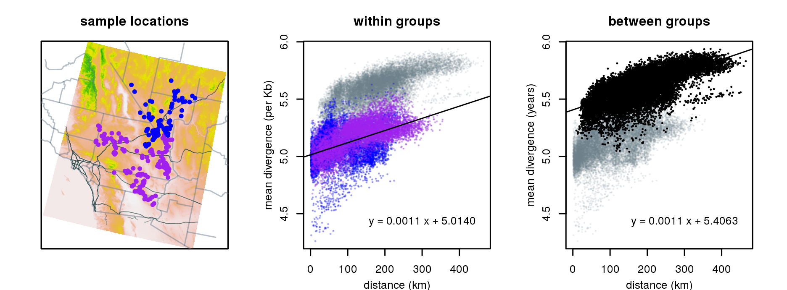
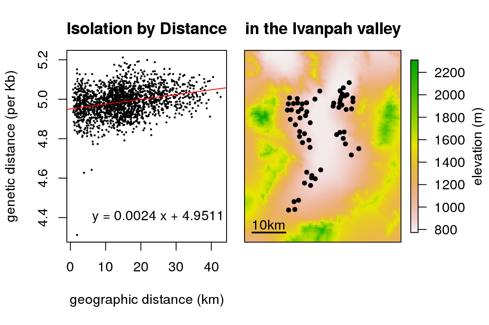
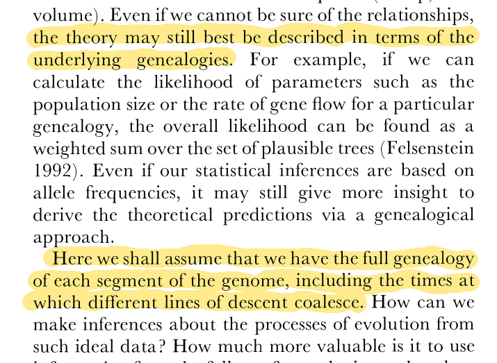
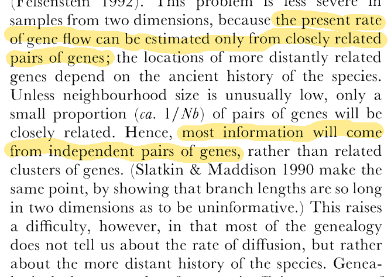
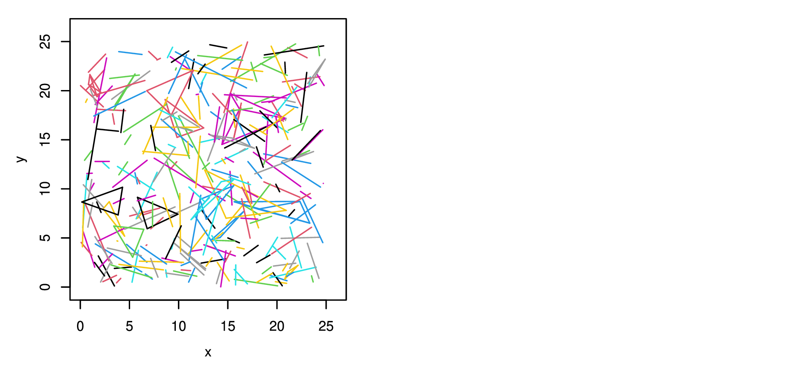
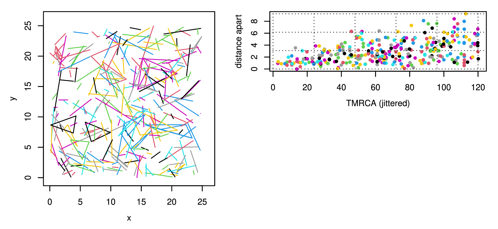
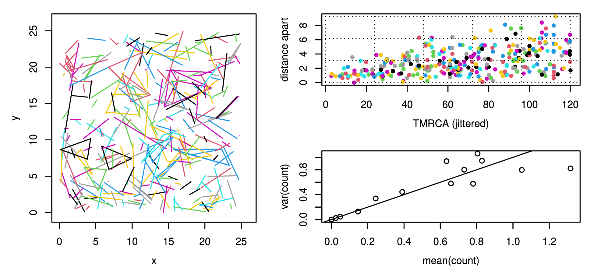

Mathematical insights and difficulties in spatial population genetics
Peter Ralph
University of Oregon
Dept of
Data Science
BartonFest ’25
IST // 26 August 2025
UO is located on the traditional indigenous homeland of the Kalapuya people. Kalapuya people were dispossessed of their indigenous homeland by the United States government and forcibly removed. Today, Kalapuya descendants are primarily citizens of the Confederated Tribes of Grand Ronde and the Confederated Tribes of Siletz Indians, and continue to make important contributions to their communities, to the UO, to Oregon, and to the world.
Joint work with:
- Alison Etheridge (Oxford)
- Tom Kurtz (Madison)
- Ian Letter (ex-Oxford)
- Terence Tsui (Warwick)
First, some thanks
Thanks, Nick!!
‘art’ by G. Coop

Desert tortoises, courtesy Brad Shaffer and Evan McCartney-Melstad

Desert tortoises, courtesy Brad Shaffer and Evan McCartney-Melstad
Spatial populations
A model
Every individual:
- reproduces at rate \(\gamma\)
- dies at rate \(\mu\)
Offspring:
- disperse with variance \(\sigma^2\)
- establish with probability \(r\)
All this can depend on location and local density, measured with a kernel \(\rho\): \[\text{(density at $x$)} = \sum_i \rho(x_i - x).\]
Everything here is thanks to Tom Kurtz,
who showed us how to do it.
Population dynamics
The population density \(\varphi_t(x)\) at time \(t\) (number of individuals is \(N\varphi(x)\))
changes because of migration \[\begin{aligned} \frac{d}{dt} \varphi_t(x) &= r(x) \frac{1}{2\sigma^2} \Delta (\gamma \varphi_t)(x) \color{white}{+ \varphi_t(x) F(x)} \end{aligned}\]
and reproduction/death: \[\begin{aligned} \frac{d}{dt} \varphi_t(x) &= r(x) \frac{1}{2\sigma^2} \Delta (\gamma \varphi_t)(x) + \varphi_t(x) F(x) , \end{aligned}\] where \(F(x) = r(x) \gamma(x) - \mu(x)\)
Forwards: lines of descent
A potential line of descent \(Y_t\) diffuses at rate \(\sigma^2 \gamma(x)\): \[dY_t = \sigma^2 \gamma(Y_t) dB_t .\]
The density of successful lines of descent
from location \(x\) at time \(s\) to location \(y\) at time \(t\) is \(h_{s,t}(x,y)\), where \[\int h_{s,t}(x,y) f(y) dy = \mathbb{E}_x[f(Y_t) e^{\int_s^t b(Y_u) du}],\]
and \[\begin{aligned} b(x) &= \text{(mean net reproductive output at $x$)} \\ &= \gamma(x) \int r(y) q(x,dy) - \mu(x) . \end{aligned}\]
Consistency
The kernel \(h_{s,t}(x,y)\) defined by \[\int h_{s,t}(x,y) f(y) dy = \mathbb{E}_x[f(Y_t) e^{-\int_s^t b(Y_u) du}],\]
is what evolves the density forwards in time: \[\varphi_t(y) = \int \varphi_s(x) h_{s,t}(x,y) dx .\]
Backwards: lineages
Suppose population has a stationary density \(\varphi(x)\). Then \[ dL_t = r(L_t) \gamma(L_t) 2 \nabla \log(\varphi\gamma)(L_t) dt + \sqrt{r(L_t)\gamma(L_t)} dB_t\]
- Lineage speed determined by rate of production of mature offspring (\(r\gamma\), \(\approx\) death),
- and drawn to regions of high total fecundity (\(\varphi \gamma\)).
- Reversible with respect to \[\color{red}{\pi(x) = \frac{\gamma(x,\varphi(x)) w(x)^2 }{ r(x,w(x))}.} \]
Can we use this?



What about branching?
These models have either
- deterministic population dynamics, or
- finite coalescence time distributions,
but not both.
What about branching?
These models have either
- deterministic population dynamics, or
- finite coalescence time distributions,
but not both.
Nonetheless…
Successful lines of descent branch at rate \[\begin{aligned} \frac{1}{N} c(x) &= \frac{1}{N} \text{(total birth + death rate)} \\ &= \frac{1}{N} \left( \gamma(x) \int r(y) q(x,dy) + \mu(x) \right) \end{aligned}\]
and so the density of close relatives at locations \(x\) and \(y\) and time \(t\) from time \(s\) is \[\begin{aligned} \frac{1}{N} \int \varphi_s(z) c(z) h_{s,t}(z,x) h_{s,t}(z,y) dz . \end{aligned}\]
Suppose that we’ve sampled \(K\) individuals with intensity \(\nu(x)\) and observed close relatives \(\{(x_i, y_i, t_i)\}_{i=1}^P\), with locations \((x_i, y_i)\) and TMRCAs \(t_i\) ago.
How many such pairs do we expect to see?
Well, the intensity of such pairs is \[\begin{aligned} w(x,y,t) = \int \varphi_{-t_i}(z) c(z) h_{-t,0}(z,x) h_{-t,0}(z,y) \end{aligned}\] and so the expected number with \(s \le t_i \le t\) is \[ \frac{K^2}{N} \int_s^t w(x,y,u) \nu(x) \nu(y) dx dy du . \]
Does it work?
Simulation: pairs with an ancestor within 20 generations iin 100 samples from a spatial population with a total of \(10^4\):



Wrap-up
Spatial population genetics?
Takeaways:
- Forwards arguments keep model parameters visible!
- Coalescence and population-scale stochasticity really are two sides of the same coin.
Moving forwards:
- A likelihood-based way to fit spatially heterogeneous population models?
- More theory needed for patchy/stochastic populations!
- S(L)imulation: see Chevy et al, A Guide to Individual-Based Simulations in Continuous Landscapes
Thanks to Nick, Alison, and Tom
Other stuff
Wright (1943), Malécot (1948)
If the population at time \(t\) has density \(\varphi_t(x)\), so that the number near \(x\) is \(N \varphi_t(x)\), and
\[ I_t(x,y) = (\text{proportion identity between $x$ and $y$ at time $t$}) , \]
then maybe \[\begin{aligned} I_t(x,y) &= (1-\mu)^2 \sum_{x',y'} \varphi_{t-1}(x') \varphi_{t-1}(y') I_{t-1}(x',y') p_1(x',x) p_1(y',y) \\ &\qquad + (1-\mu)^2 \frac{1}{N} \sum_z \varphi_{t-1}(z) p_1(z,x) p_1(z,y) (1 - I_{t-1}(z,z)), \end{aligned}\] where dispersal is \[ p_1(z,x) = \mathbb{P}\{\text{offspring from $z$ goes to $x$}\} . \]
better explanations: XXX
Backwards
\[\begin{aligned} I_t(x,y) &= (1-\mu)^2 \sum_{x',y'} \varphi_{t-1}(x') \varphi_{t-1}(y') I_{t-1}(x',y') p_1(x',x) p_1(y',y) \\ &\qquad + (1-\mu)^2 \frac{1}{N} \sum_z \varphi_{t-1}(z) p_1(z,x) p_1(z,y) (1 - I_{t-1}(z,z)) \end{aligned}\]
Two individuals today are identical if
- their parents were distinct and identical
- or they are siblings,
- and neither got a new mutation.
Forwards
\[\begin{aligned} I_{t+1}(x,y) &=(1-\mu)^2 \sum_{x',y'} \varphi_{t}(x') \varphi_{t}(y') I_{t}(x',y') p_1(x',x) p_1(y',y) \\ &\qquad + (1-\mu)^2 \frac{1}{N} \sum_z \varphi_{t}(z) p_1(z,x) p_1(z,y) (1 - I_{t}(z,z)) \end{aligned}\]
In the next generation, those who are identical
- have distinct and identical parents,
- or are siblings,
- except for when new mutation intevenes.
A solution
At stationary, and in continuous time, we get \[\begin{aligned} \frac{\sigma^2}{2} (\Delta_x + \Delta_y) I_t(x,y) - 2 \mu I(x,y) &= - \frac{1}{N} \delta_0(x-y) (1 - I(x,y)) . \end{aligned}\]
The solution is \[\begin{aligned} \frac{I(x,y)}{1 - I(XXX)} &= \frac{1}{N} \int_0^\infty \int e^{-2 \mu t} \varphi_t(z) p_t(z,x) p_t(z,y) dz dt . \end{aligned}\]
Interpretation: sum over all coalescence times.
Solution, in \(\mathbb{R}^2\): \[ I(x,y) = K_0(xyz) . \]
:tada:
Difficulties
- What is \(N\)?
- Um but \(K_0(0) = \infty\)?
- Offspring don’t move independently, especially successful ones.
What’s really going on?
Let \(\tau_{xy}\) be the TMRCA of samples at \(x\) and \(y\), so that \(I(x,y) = \mathbb{E}[e^{-2\mu t} \tau_{xy}]\),
and \[\begin{aligned} n_s(z;x,y) &= (\text{number of pairs at $x,y$} \\ &\qquad \text{whose MRCA is at $z$, time $s$ ago}) . \end{aligned}\]
Then \[\begin{aligned} \mathbb{P}\{ \tau_{xy} \le t \} = \frac{ \int_0^t \int n_s(z;x,y) dz ds } { \int_0^\infty \int n_s(z;x,y) dz ds } . \end{aligned}\]
We want \[ n_s(z;x,y) = C p_s(z,x) p_s(z,y) , \] with \(C\) a constant (local birth rate).
The problem
We want
- \(n_s(z;x,y) = C p_s(z,x) p_s(z,y)\), with \(C\) a constant, and
- \(\int_0^\infty \int n_s(z;x,y) dz ds < \infty\).
EKLRT showed that these are contradictory*.
More generally: continuous spatial population models* can either have
- finite coalescent time distributions, or
- be deterministic,
but not both.
\({}^*\)some terms and conditions may apply
Open question
There is nonetheless an expression for \(I\) in \(d=1\); how do you get this out of the EKLRT model?